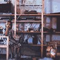
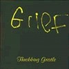
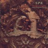

strange music page
overseas * * * noise music
#いわゆる80年代ノイズです。なんでこんなものを聴くようになったかというと、まずノイバウテンが好きだったという事。
あとジャックスの早川義夫さんのの本屋(高校のすぐそばだった)でペヨトル工房(夜想とかWAVEとか出してるマニアックな出版社)から出ていた銀星倶楽部のノイズ特集号を買ってしまった事.....なんだかその頃とても魅力的なように思えたんですよね。(どなたかこの号に載ってるTamiaって人のレコード持ってないですかね？捜してるんですけど)
ちなみに今ではThrobbing Gristleとかそんなに好きでもないんですけど、SPKとは好きです。
正直言って80年代ノイズで今聴いて面白く感じるものって、そう多くは無いみたいですけど。たまにこんなのも聴きたくなったりします。
|
- Throbbing Gristle
- PSYCHICK TV
- S.P.K.
- Cabaret Voltaire
- Diamanda Galas
- Laibach
|
#80年代のノイズミュージックを代表するよーな一枚かな？ 電子音とノイズを組み合わせたよーな音。
けだるいボーカルの曲とか、最近の音響系なんかに通じるような雰囲気もあったりします。

- I.B.M.
- Hit by a Rock
- United
- Valley of the Shadow of Death
- Dead on Arrival
- Weeping
- Hamburger Lady
- Hometime
- AB/7A
- E-Coli
- Death Treats
- Walls of Sound
- Blood on the Floor
- Five Knuckles Shuffle
- We Hate You (Little Girls)
- Genesis P-Orridge (bass,violin,vocals)
- Peter Christopherson (tapes,machine)
- Chris Carter (synthesizers,electronic rhythms,tapes)
- Cosey Fanni Tutti (guitars,effects,tapes)
#えーと、このCDはたぶんTGのBOXと一緒に出てたものだと、思います。この頃のMUTE RECORDはノイズ系のBOXSETを狂ったように出していて、しかも全部初回限定という凶悪なものだったらしいです。CANとかLAIBACHとかSPKとかNEUBAUTENとかNITZER EBBとか...今や全然見かけないです。誰かDAFのBOX見かけたら教えてください。

- Hamburger Lady
- Hot on The Heels of Love
- Subhuman
- AB/7A
- Six Six Sixties
- Blood on The Floor
- 20 Jazz Funk Greats
- Tiab Guls
- United
- What A Day
- Adrenalin
- Genesis P-Orridge (bass,violin,vocals)
- Peter Christopherson (tapes,machine)
- Chris Carter (synthesizers,electronic rhythms,tapes)
- Cosey Fanni Tutti (guitars,effects,tapes)
ALFA RECORDS/MUTE RECORDS: ALCB-241
#こいつは、高校くらいのノイズ聴きはじめの頃、何がナンだかわからず買っちゃった1枚です。延々とエコーがかかった左トラックの喋り声と右トラックのノイズが続きます。あまり良い夢見れ無さそうです。
さすがに何が面白いのかわからなかったです。

- Camera
- Telephone
CDTG-24
- Godstar
- Just Like Arcadia
- Southern Comfort
- We Kiss
- She Was Surprised
- Caresse Song
- Starlit Mire
- Thee Dweller
- Being Lost
- Baby's Gone Away
- Ballet Disco
#オーストラリアのノイズグループ、SPKの1stLPです。ALFA RECORDSの凶悪限定ボックスセットで、3枚組のCDです。今結構探してるんですけど、どこいっても見かけません。SPKは
- Emanation Machine R.Gie 916
- Suture Obsession
- Macht Schreken
- Beruftverbot
- Ground Zero: Infinity Dose
- Stammhein Torturkammer
- Retard
- Epilept: Convulse
- Kaltbruchig Acideath
ALFA/MUTE RECORDS: ALCB-590 (original release 1980)
- Genetic Transmission
- Post-Mortem
- Desolation
- Napalm (Terminal Patient)
- Cry from The Sanatorium
- Baby Blue Eyes
- Israel
- Internal Bleeding
- Chamber Music
- Despair
- The Agony of The Plasma
- Day of Pigs
- War of Islam
- Maladia Europa
ALFA/MUTE RECORDS: ALCB-591 (original release 1982)
#このアルバム大好きです、ノイズなんですけど聴いてて心地よくって。

- Invocation (To Secular Heresies)
- Palms Crossed in Sorrow
- Romanz in Moll (Romance in A Minor Key)
- In The Dying Moments
- In Flagrante Delicto
- Alocasia Metallica
- Necropolis
- The Garden of Earthly Delights
- The Doctrine of Eternal Ice
ALFA/MUTE RECORDS: ALCB-592 (original release 1986)
#ノイズ/インダストリアル系って、今だとまともに聴けないのが多いですけど結構このグループは好きで聴いてます。Cabaret Voltaireのラフトレード時代のアルバムです。ミックスアップとかコラージュとかを多用した電子音楽です。醒めた雰囲気が気に入ってるのかも。
- The Voice of America Damege is Gone
- Partially Submerged
- Kneel to the Boss
- Premonition
- This is Entertainment
- If The Shadouws could March?
- Stay out of it
- Obsession
- News from Nowhere
- Messages Received
- Christopher Watson (electronics,tapes)
- Richard H.Kirk (guitars,wind instruments)
- Stephen Mallinder (bass,electronic percussions,vocals)
ALFA/MUTE RECORDS: ALCB-212 (original release 1980 - Rough Trade)
- A Touch of Evil
- Sly Doubt
- Landslide
- A Thousand Ways
- Red Mask
- Split Second Feeling
- Black Mask
- Spread The Virus
- A Touch of Evil (reprise)
- Christopher Watson (vox continental,tape recorder)
- Stephen mallinder (vocals,bass,bongos)
- Richard H.Kirk (synthesizers,guitars,clarinet,horns,strings)
ALFA/MUTE RECORDS: ALCB-213 (original release 1981, Rough Trade)
- Kirlian Photograph
- No Escape
- Fourth Shot
- Heaven and Hell
- Eyeless Sight (recorded live '79)
- Photophobia
- On Every Other Street
- Expect Nothing
- Capsules
- Chris Watson (electronics,tape)
- Stephen Mallinder (bass,vocals)
- Richard H.Kirk (guitars,wind inst.)
ALFA/MUTE RECORDS: ALCB-214 (original release 1979, Rough Trade)
#えーと、昔確か御茶ノ水のJANISで中古で買いました。狂気の女性ヴォイスパフォーマー(なんか変なあおりみたいだけど、そんな感じ)のアルバム。あんまり聴いてて楽しいモノではないです、見に行ったらちょっとは違うかも。ただ声とエフェクトだけでこんなものが作れるんだというのはすごいなーと想いました。でもきついっす「いぃぃやぁああああー」とか叫びっぱなし、ライヴ盤というか実況盤みたいなイメージです。
- There re no more tickets to the funeral
- This is the law of the plague
- I wake up and I see the face of the devil
- Confessional (give me sodomy or give me death)
- How shall our judgement be carried out upon the wicked!
- Let us praise the masters of slow death
- Consecration
- Sono l'antichristo
- Chris d'aveugle
- Let my people go
- Diamanda Galas (voice,piano)
- David Linton (drums,percussions)
- Blaise Dupuy (elecronic,keyboards)
- Ramon Diaz (electronic percussion)
- Michael McGrath (tapes,electronics)
#むかーし渋谷のディスクユニオンで買ったモノ。この辺の人達の80年代後半以降ってあまりに悲惨すぎて聴く気になれないんですけど。やっぱこの辺りの時期はナカナカ。
- JARUZELSKY
- SREDI BOJEV
- BRAT MOJ
- SMRT ZA SMRT
- TI, KI IZZIVAS
- SILA
- MI KUJEMO BODOCNOST
- JARUZELSKI
- INMITTEN VON KAMPFEN
- BRUDER MEIN
- TOD FUR TOD
- DU, DER DU HERAUSFORDERST
- MACHT
- WIR SCHMIEDEN DIE ZUKUNFT
- Decade Null
- Everlasting in Union
- Illumination
- Le Privilege Des Morts
- Codex Durex
- Hymn to The Black Sun
- Young Europa pts 1-10
- The Hunter's Funeral Procession
- White Law
- Wirtschaft ist tot
- Torso
- Entartete Welt
- Kinderreich
- Sponsored by Mars
- Regime of Concidence, State of Gravity
MUTE RECORDS: 9-61282-2